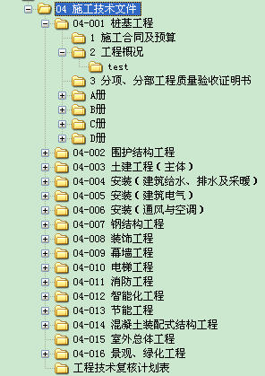

√ 目录结构建包――先在系统中建立文件夹结构 如图一、图二
图一

图二
√ 表格模板――有表格的目录需要在文件夹同级建立表格文件，命名规则为“文件夹名+'_model.cll'”,没有表格模板的不需要建立
图三
√ 样例――目录级的样例直接放在对应的目录文件夹内，样例文件名称既是以后系统中显示的样例名称，有样例的文件夹下不能再建立其他目录结构(否则导入时自动忽略样例文件，因为只有末级目录才能有样例。)。
图四
导出时，目录结构自动建包，格式和导入目录建包格式一致。